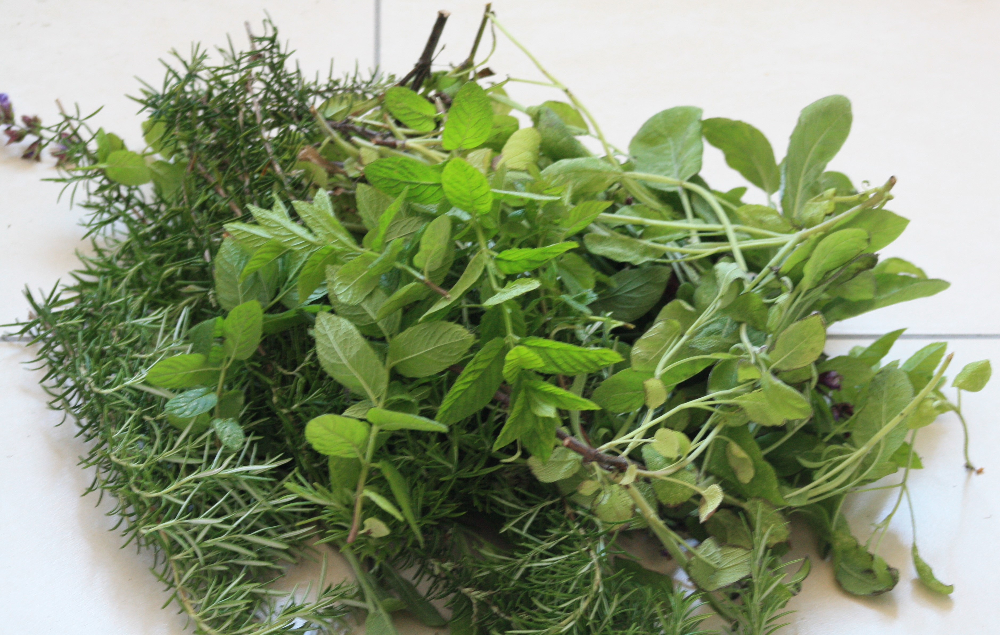
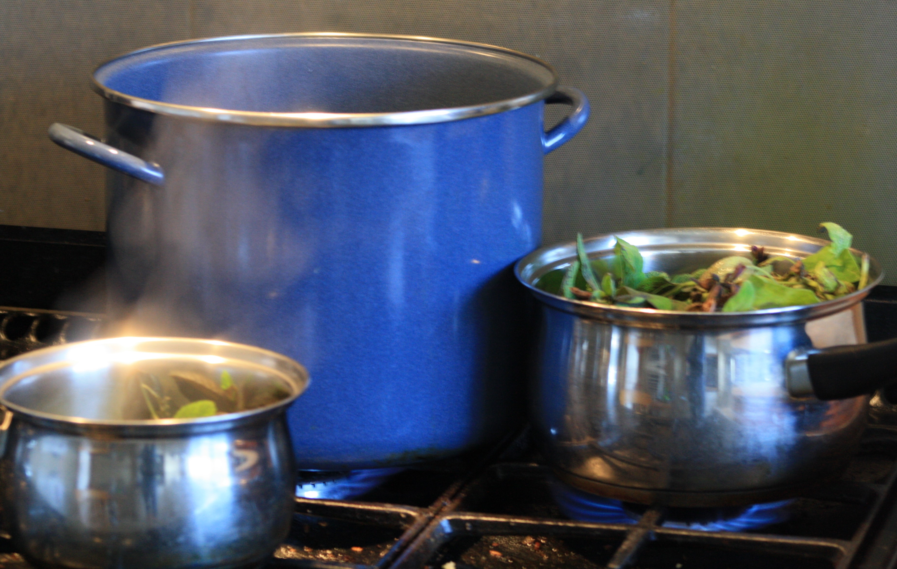
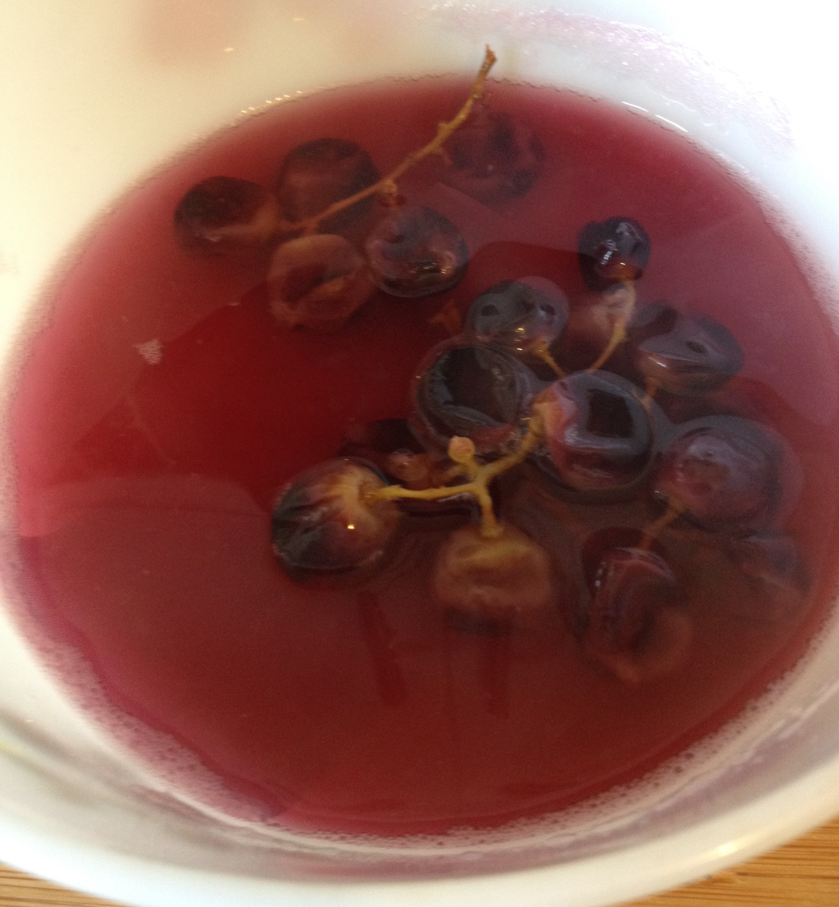
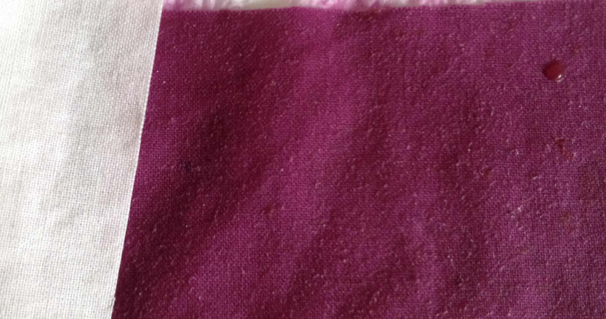
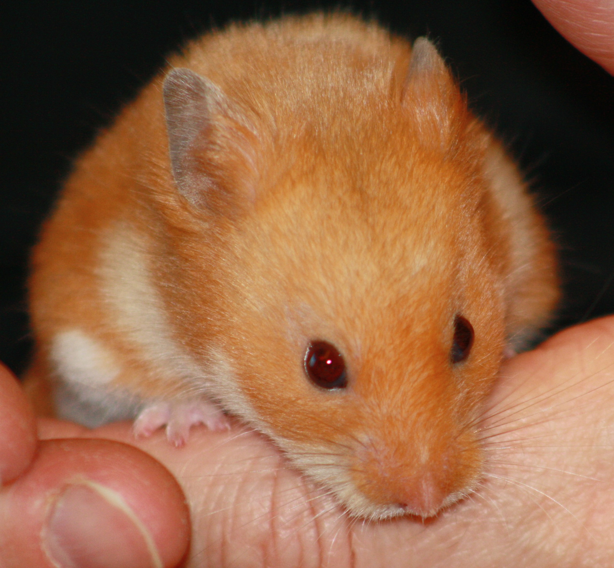

13-Jun-2017 | Milku
We're trying to get colours from nature.
It's Day 13 of 30 Days Wild.
My humans thought they’d see whether any of the vegetation in the garden would produce some natural dyes. It was very optimistic in my opinion, but points for trying.
They picked sage, rosemary and mint, put each herb in a pan of water and boiled for about an hour. At first the aroma was pleasant, but after a while some of my humans thought they were living through an episode of Horrible Histories.
 They did produce some unpleasant coloured liquids in which they soaked some cloth. The results were subtle
disappointing. They were expecting green hues but got more pale beige. Still, they were keen to try again
and consulted thespruce.com, which provided lots of details about how to
produce colourful dyes from different plants.
Well, using carrots produced even worse results than the herbs. But the black grapes produced a really lovely purple colour.
 And all was not lost with the herby liquids. They’d spotted a recipe online for a rosemary and sage facial toner. While it didn’t state that the herbs should be boiled until gruesome, they mixed up the liquids and tried it anyway.
Rosemary is known for its astringent, disinfectant, and antioxidant properties, it is great for combatting acne. Garden sage is antiseptic, antibiotic, anti-fungal and astringent. They sound great – maybe my humans should bath in the stuff!
Of course, I don’t need anything like that. You can see I have a perfect complexion already.
